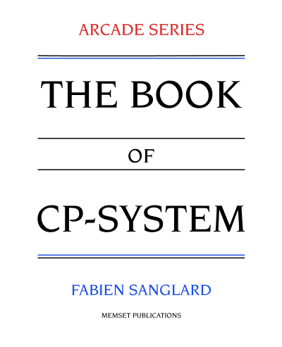

 There used to be a time when video-game enthusiasts could only experience the very best in places called "arcades".
In the early 90s, home consoles such as the Super Nintendo, the Sega Genesis, or the NEC PC Engine were ramping up in terms of horsepower. However they were a far cry from the hardware found in coin-ops. Featuring multitudes of huge sprites covering the whole screen, beautiful colors, digitized sounds, and engaging high quality music, these cabinets were in a league of their own.
Accessing arcades was an adventure in itself. Quarters had to be gathered, means of transportation acquired, and paper maps studied. Some carpooled while others used their bikes. Lucky ones had "amusement venues" dedicated to video-game in their hometown while others found themselves in a dirty pub surrounded by adults whom did not seem to have much magic happening in their lives.
The overhead was tremendous. Many hours were invested sometimes resulting in only a few minutes of play time. Despite all these obstacles, connoisseurs found the attraction irresistible. Players of all ages and origins gravitated to the same places in order to follow their passion.
Rows of lined up cabinets create a highly competitive environment. Publishers only had a few seconds to catch a player attention and most importantly their quarters. It is during that time that a young company named Capcom managed to elevate itself above the competition and turn itself into an icon.
If you want to learn about the hardware powering titles such as Street Fighter II, Ghouls’n Ghosts, or Final Fight, then "The Book of CP-System" is for you. Inside you will find the "Capcom System" (a.k.a CPS-1) explained in excruciating details, along more than one hundred explanatory drawings. The software is also covered with the description of the historical way of doing things and as well as a modern toolchain (CCPS).
As usual, the overall is sprinkled with broken English and typos to remind you this is not just a dream.
It is available at both Amazon and TheBookPatch. If you prefer to remain digital, it is available on the GooglePlay Store here.
It is also available as gift-what-you-want from here.
I plan on releasing a printed version in a month after I gather feedback from the five people who will read it. EDIT: It is here.
The full source code, compiling with one keystroke, is available on github here.
$ git clone git@github.com:fabiensanglard/cpsb.git $ cd cpsb $ sudo apt install inkscape $ sudo apt install -y texlive-full $ ./make.sh release
A companion SDK, containing all the tools authored along the book is also available here and explained here.